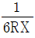
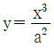
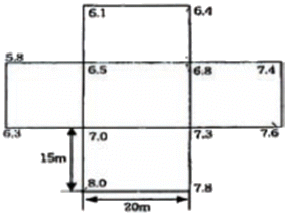
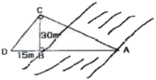
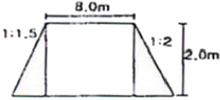
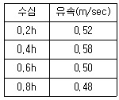
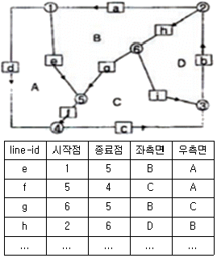
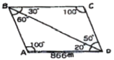
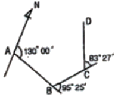

측량및지형공간정보산업기사 (2010-09-05 기출문제)
1과목: 응용측량
1. 완화곡선 중 3차 포물선에 적용하는 직교좌표의 방정식으로 옳은 것은? (단, a2=

R : 곡선반경, X : 횡거)
- y=a2x3
- y=2a2x3
- y=a4x3
(정답률: 알수없음)

2. 하천측량에서 2점법으로 평균유속을 구하려고 한다. 수심을 H라 할 때 수면으로부터의 측정위치로 옳은 것은?
- 0.2H와 0.4H
- 0.2H와 0.6H
- 0.2H와 0.8H
- 0.4H와 0.8H
(정답률: 알수없음)
3. 다음 중 완화곡선의 종류가 아닌 것은?
- 배향곡선(hair pin curve)
- 클로소이드(clothoid)
- 렘니스케이트(lemniscate)
- 3차 포물선(cubic spiral)
(정답률: 64%)
4. 그림은 택지를 조성하고자 하는 일부 지구의 표고값을 표시하고 있다. 이 지구의 토공량과 토공균형을 맞추기 위한 계획고는? (단, 표고의 단위는 m이고, 분할된 각 면적은 동일하다.)

- V=6225m3, h=4.15m
- V=10365m3, h=4.15m
- V=6225m3, h=6.91m
- V=10365m3, h=6.91m
(정답률: 알수없음)
5. 터널 내의 곡선설치에 사용되는 방법이 아닌 것은?
- 현편거법
- 내접다각형법
- 외접다각형법
- 중앙종거법
(정답률: 알수없음)
6. 지표에 설치된 중심선을 기준으로 터널 입구에서 굴착을 시작하고 굴착이 진행됨에 따라 터널내의 중심선을 설정하는 작업은?
- 도벨설치
- 터널 내 곡선설치
- 지표설치
- 지하설치
(정답률: 알수없음)
7. 편각법에 의한 곡선설치에서 교각이 52°이고, 반경이 120m일 때, 곡선길이 15m에 해당하는 편각은 얼마인가?
- 3° 04‘ 52“
- 3° 24‘ 52“
- 3° 34‘ 52“
- 6° 29‘ 52“
(정답률: 알수없음)
8. 노선의 곡선반지름 60m, 클로소이드 매개변수는 40m이다. 곡선장은 얼마인가?
- 15.0m
- 26.7m
- 50.3m
- 90.0m
(정답률: 알수없음)
9. 다음 중 댐 건설을 위한 조사측량에서 댐 사이트의 평면도 작성 방법으로 가장 적당한 것은?
- 평판측량
- 평판측량과 시거측량의 병용
- 지상사진측량 또는 항공사진측량
- 스타디아측량
(정답률: 알수없음)
10. 곡선반지름이 100m인 단곡선을 설치하기 위하여 교각을 측정하였더니 50° 36‘ 이었다면 접선길이(T.L)는?
- 120.28m
- 80.46m
- 62.25m
- 47.27m
(정답률: 알수없음)
11. 유량측정장소의 선정 조건에 해당되지 않는 것은?
- 교량, 그 밖의 구조물에 의한 영향을 받지 않는 곳
- 와류와 역류가 생기지 않는 곳
- 유수방향이 최다 방향으로 나누어지는 곳
- 합류에 의하여 불규칙한 영향을 받지 않는 곳
(정답률: 알수없음)
12. 완화곡선 중 곡률이 곡선의 길이에 비례하는 곡선으로 정의되는 것은?
- 클로소이드(Clothoid)
- 렘니스테이트(Lemniscate)
- 3차 포물선
- 반파장 sine 체감곡선
(정답률: 알수없음)
13. 지점경관구성요소가 아닌 것은?
- 시점
- 상호계
- 주대상
- 시점장
(정답률: 알수없음)
14. 그림에서 ∠ACD=∠ABC=90°, BC=30m, BD=15m일 때 하천의 두 지점 AB의 거리는?

- 40m
- 50m
- 60m
- 70m
(정답률: 알수없음)
15. 도로폭 8.0m의 도로를 건설하기 위햐 높이 2.0m의 성토를 하려고 한다. 건설 도로연장은 80.0m이고, 왼쪽 경사는 1:1:5, 오른쪽 경사는 1:2로 건설하려면 성토량은?

- 1,280m3
- 1,760m3
- 1,840m3
- 1,920m3
(정답률: 알수없음)
16. 단곡선에 있어서 각 I=60°, 반경 R=100m, 곡선시점(B.C)까지 거리가 120.85m일 때 곡선종점(E.C)의 추가거리는?
- 1⑤.57m
- 124.87m
- 2⑤.57m
- 225.57m
(정답률: 알수없음)
17. 누가토량을 곡선으로 표시한 것을 유토곡선(mass curve)라고 한다. “유토곡선에서 하향구간은 (A)구간이고, 상향구간은 (B)구간을 나타낸다.”에서 (A), (B)가 알맞게 짝지어진 것은?
- A : 성토, B : 절토
- A : 절토, B : 성토
- A :성토와 절토의 교차, B : 절토
- A : 성토와 절토의 교차, B : 성토
(정답률: 알수없음)
18. 수심 h인 하천의 유속 측정을 한 결과가 표와 같다. 1점법, 2점법, 3점법으로 구한 평균유속의 크기를 각각 V1, V2, V3라 할 때 이들을 비교한 것으로 옳은 것은?

- V1=V2=V3
- V1＞V2＞V3
- V3＞V2＞V1
- V2＞V1＞V3
(정답률: 알수없음)
19. 터널측량에 관한 설명으로 옳지 않은 것은?
- 터널 측량은 터널 외 측량과 터널 내 측량, 터널 내외 연결측량으로 나눌 수 있다.
- 터널의 길이, 방향은 삼각측량 또는 트래버스 측량으로 정한다.
- 터널 내의 수준측량은 정확도를 위해 레벨과 수준척에 의한 직접 수준측량으로만 측정한다.
- 터널 내 측량에서는 기계의 십자선, 표척눈금 등에 조명이 필요하다.
(정답률: 알수없음)
20. 지상 1km2의 면적을 지도상에서 4cm2로 표시하기 위한 축척은?
- 1:2,500
- 1:5,000
- 1:25,000
- 1:50,000
(정답률: 알수없음)
2과목: 사진측량 및 원격탐사
21. 입체시를 할 때 입체시가 되는 부분의 과고감을 크게하기 위한 방법은?
- 종중복도를 감소시킨다.
- 종중복도를 증가시킨다.
- 횡중복도를 감소시킨다.
- 횡중복도를 증가시킨다.
(정답률: 알수없음)
22. 사진지도 중 등고선을 기준으로 카메라의 경사, 지표면의 비고에 의한 기복변위까지 수정한 것은?
- 정사 투영 사진지도
- 반조정 집성 사진지도
- 약조정 집성 사진지도
- 조정 집성 사진지도
(정답률: 알수없음)
23. 60m 높이의 굴뚝을 촬영고도 3000m의 높이에서 촬영한 항공사진이 있고, 그 사진의 주점기선 길이가 10cm이었다면, 이 굴뚝의 시차차는?
- 1mm
- 2mm
- 10mm
- 20mm
(정답률: 30%)
24. 벡터구조가 격자구조에 비해 갖고 있는 특징으로 옳은 것은?
- 자료구조가 복잡하다.
- 그래픽 자료의 양이 방대하다.
- 좌표변환을 위한 소요시간이 많다.
- 위상 정보가 제공되지 않는다.
(정답률: 알수없음)
25. C-계수 1200인 도화기로 축척 1:30,000 항공사진을 도화작업할 때 신뢰할 수 있는 최소 등고선 간격은? (단, 초점거리 180mm이다.)
- 4.5mm
- 5.0mm
- 5.5mm
- 6.0mm
(정답률: 알수없음)
26. 항공사진에서 사진의 판독요소와 거리가 먼 것은?
- 색조
- 날짜
- 질감
- 음영
(정답률: 알수없음)
27. 축척 1:50,000 항공사진의 비행고도가 7500m 이었다면 촬영에 사용된 카메라의 초점거리는?
- 120mm
- 150mm
- 210mm
- 250mm
(정답률: 알수없음)
28. GIS의 자료입력 방법이 아닌 것은?
- 수동방식(디지타이지)에 의한 방법
- 자동방식(스캐너)에 의한 방법
- 항공사진에 의한 해석도화 방법
- 잉크젯 프린터에 의한 도면 제작 방법
(정답률: 알수없음)
29. 사진측량에서 말하는 모델(model)의 의미로 옳은 것은?
- 한 장의 사진이다.
- 편위수정된 사진이다.
- 한 쌍의 사진으로 실체시 되는 부분이다.
- 어느 지역을 대표할 만한 사진이다.
(정답률: 알수없음)
30. 비고 300m이고, 20km×40km인 면적의 지역을 해발고도 3300m에서 초점거리 150mm의 카메라로 촬영했을 때 사진매수는? (단, 종중복 60%, 횡중복 30%, 사진크기 23cm×23cm, 안전율은 무시하고, 입체모델의 면적으로 간이법으로 계산한다.)
- 136매
- 154매
- 181매
- 281매
(정답률: 알수없음)
31. 그림과 같은 자료에 대해 표와 같이 위상을 구축하였다. 잘못 구축된 선(line-id)은?

- e
- f
- g
- h
(정답률: 알수없음)
32. 항공사진측량의 작업에 속하지 않는 것은?
- 대공표지 설치
- 세부도화
- 사진기준점 측량
- 천문측량
(정답률: 알수없음)
33. 인공위성에 의한 원격탐측(Remote Sensing)의 장점이 아닌 것은?
- 관측자료가 수치적으로 취득되므로 판독이 자동적이며, 정향화가 가능하다.
- 관측 시각이 좁으므로 정사투영상에 가까워 탐사자료의 이용이 쉽다.
- 자료 수집의 광역성 및 동시성, 주기성이 좋다.
- 회전주기가 일정하므로 언제든지 원하는 지점 몇 시기에 관측하기 쉽다.
(정답률: 알수없음)
34. 다음 중 우리나라 위성으로 옳은 것은?
- IKONOS
- LANDSAT
- KOMPSAT
- IRS
(정답률: 알수없음)
35. 벡터 형식의 자료가 아닌 것은?
- TIGER
- GeoTiff
- PostScript
- DXF
(정답률: 알수없음)
36. 공간분석 위상관계에 대한 설명으로 옳지 않은 것은?
- 위상관계란 공간자료의 상호관계를 정의한다.
- 위상관계란 인접한 점, 선, 면 사이의 공간적 대응관계를 나타낸다.
- 위상관계란 연결성, 인접성의 특성을 포함한다.
- 위상관계에서 한 노드(Node)를 공유하는 모든 아크(Aec)는 상호연결성 존재가 필요없다.
(정답률: 알수없음)
37. 도화기의 발달과정 경로를 옳게 나열한 것은?
- 기계식도화기-해석식도화기-수치도화기
- 수치도화기-해석식도화기-기계식도화기
- 기계식도화기-수치도화기-해석식도화기
- 수치도화기-기계식도화기-해석식도화기
(정답률: 알수없음)
38. 대공표지(Air Target Signal Point)에 대한 설명으로 옳은 것은?
- 사진상에 명확히 나타나고 정확히 측량할 수 있는 자연물로 이루어진 접합점
- 스트립을 인접스트립에 연결시켜 블록을 형성하기 위해 사용되는 점
- 항공사진에 표정용 기준점의 위치를 정확하게 표시하기 위해 촬영 전 지상에 설치하는 것
- 사진상의 주점이나 표정점 등 지점의 위치를 인접한 사진상에 옳기는 것
(정답률: 알수없음)
39. 수치표고모형(DEM)또는 불규칙삼각망(TIN)을 이용하여 추출할 수 있는 정보가 아닌 것은?
- 경사 방향
- 등고선
- 가시도 분석
- 지표 피복 활용
(정답률: 알수없음)
40. 사진지표의 용도가 아닌 것은?
- 사진의 신축 측정
- 주점의 위치 결정
- 해석적 내부표정
- 지구의 곡률 보정
(정답률: 알수없음)
3과목: GIS 및 GPS
41. 표고 300m인 평탄지에서 거리 1500m를 평균해수면상의 값으로 고치기 위한 보정량은? (단, 지구의 반경은 6370km라 한다.)
- -0.⑤8m
- -0.062m
- -0.066m
- -0.071m
(정답률: 알수없음)
42. 측량과 관련된 설명 중 옳지 않은 것은?
- 평균해수면은 일종의 등포텐셜면으로 등포텐셜면은 무수히 많이 존재한다.
- 다각측량은 선로와 같이 좁고 긴 곳의 측량에 편리하다.
- 단삼각망의 조정에서 각 점의 내각이 같은 정밀도로 관측하였을 때 측각오차는 각의 크기에 비례하여 배분한다.
- 평판측량의 방사법은 주로 소규모 지역의 지형측량에 이용한다.
(정답률: 알수없음)
43. 표준길이보다 3cm가 긴 30m의 줄자로 거리를 관측한 결과 두 점간의 거리가 300m이였다. 이 거리의 정확한 값은?
- 299.3m
- 299.7m
- 300.3m
- 300.7m
(정답률: 알수없음)
44. 삼각측량에서 검기선에 대한 설명으로 옳은 것은?
- 삼각측량에서 계산결과를 점검하기 위한 기선이다.
- 삼각측량의 계산을 위하여 최초의 기준이 되는 측선이다.
- 기선과 검기선의 길이는 같아야 한다.
- 검기선을 이용하여 정밀 수준망에 연결한다.
(정답률: 38%)
45. 기준점 측량과 가장 관계가 먼 것은?
- 시거측량
- 삼각측량
- 삼변측량
- 직접수준측량
(정답률: 알수없음)
46. 1595m 산정상과 1390m 산기슭 사이에 주곡선 간격의 등고선 개수는? (단, 축척은 1:50,000이다.)
- 9개
- 10개
- 19개
- 20개
(정답률: 알수없음)
47. "GPS측량에서 L-밴드의 마이크로파에 속하는 두 개의 반송파는 PRN(Pseudo-Random Noise) 코드로 변조된다.“ 에서 두 개의 코드로 짝지어진 것은?
- C/A코드, L2코드
- C/A코드, P코드
- P코드, L코드
- L코드, G코드
(정답률: 알수없음)
48. 그림에서 측선 CD의 거리는?

- 500m
- 550m
- 600m
- 650m
(정답률: 30%)
49. 그림에서와 같이 각 측점에 대해 편각 관측을 수행하였다. DC측선의 방위각은? (단, ∠A=130°, ∠B=95° 25' ∠C=83° 27')

- 204° 32‘ 30“
- 24° 30‘ 32“
- 131° 08‘
- 34° 35‘
(정답률: 알수없음)
50. 지형측량의 순서로 옳은 것은?
- 측량계획작성→도근점측량→측량원도작성→세부측량
- 측량계획작성→도근점측량→세부측량→측량원도작성
- 측량계획작성→세부측량→측량원도작성→도근점측량
- 측량계획작성→측량원도작성→도근점측량→세부측량
(정답률: 알수없음)
51. 실제의 2점간의 거리 30m를 도상 2mm로서 표시할 때의 축척은 얼마인가?
- 1/10,000
- 1/15,000
- 1/25,000
- 1/35,000
(정답률: 알수없음)
52. 삼각망 중에서 단열삼각망이 주로 사용되는 측량은?
- 광대한 지역의 삼각측량
- 지적경계측량
- 운동장의 지형측량
- 하천측량과 같은 지역의 삼각측량
(정답률: 알수없음)
53. 각 관측에서 망원경의 정위, 반위로 관측한 값을 평균으로 소거할 수 있는 오차는?
- 오독에 의한 착오
- 시준축 오차
- 연직축 오차
- 분도반의 눈금오차
(정답률: 알수없음)
54. GPS에 대한 설명으로 옳은 것은?
- GPS는 미국에서 개발한 위성측위시스템이며, 궤도면의 수는 4개이다.
- GPS의 항법메세지는 방송파에 실려 전달된다.
- RTK GPS 측량자료는 보통 망조정을 필요로 한다.
- GPS는 Lidar과 같이 매우 빠른 레이저를 이용한 측량시스템이다.
(정답률: 알수없음)
55. 어떤 한 각을 관측하여 32° 30‘ 20“, 32° 30’ 15”, 32° 30‘ 17“, 32° 30’ 18”, 32° 30‘ 20“의 결과를 얻었다. 이 각관측의 평균제곱근오차는?
- ±0.5“
- ±2.1“
- ±3.5“
- ±4.0“
(정답률: 36%)
56. 수준측량의 용어에 대한 설명으로 옳지 않은 것은?
- IP(중간점) : 어떤 지점의 표고를 알기 위하여 수준척을 세워 전시만을 취한 점
- TP(이기점) : 기계를 옮기기 위하여 어떠한 점에서 전시와 후시를 취하는 점
- FS(전시) : 표고를 알고자 하는 곳의 수준척을 읽은 값
- BS(후시) : 측량방향을 기준으로 기계의 후방을 시준하여 읽은 값
(정답률: 알수없음)
57. A측점에 대한 GPS 관측결과, GRS80 타원체고가 123.456m, 지오이드고가 -23.456m 이었다면 지오이드면에서 A점까지의 높이는 얼마인가?
- 76.544m
- 100.000m
- 146.912m
- 170.368m
(정답률: 알수없음)
58. GPS측량의 오차 중 신호전달과정과 관련된 편의(오차)와 거리가 먼 것은?
- 전리층 편의
- 대류권 지연
- 다중경로의 영향
- 주파수 오차
(정답률: 알수없음)
59. 레벨(Level)의 조정에 관한 사항으로 옳지 않은 것은?
- 기포관축은 연직축에 직교해야 한다.
- 시준선은 기포관축에 평행해야 한다.
- 십자횡선은 연직축에 직교해야 한다.
- 십자종선과 시준선은 평행해야 한다.
(정답률: 55%)
60. 수준측량에서 5km 왕복측정에서 허용오차가 ±10mm일 때 2km 왕복측정의 경우 허용오차는 약 얼마인가?
- ±9.5mm
- ±8.4mm
- ±7.2mm
- ±6.3mm
(정답률: 알수없음)
4과목: 측량학
61. 측량기준점에서 국가기준점에 해당되지 않는 것은?
- 지자기점
- 수로기준점
- 지적기준점
- 통합기준점
(정답률: 알수없음)
62. 심사를 받지 않고 지도 등을 간행하여 판매하거나 배포한 자에 대한 벌칙으로 옳은 것은?
- 3년 이하의 징역 또는 3,000만원 이하의 벌금
- 2년 이하의 징역 또는 2,000만원 이하의 벌금
- 1년 이하의 징역 또는 1,000만원 이하의 벌금
- 300만원 이하의 과태료
(정답률: 25%)
63. 측량ㆍ수로조사 및 지적에 관한 법률에 적용을 받는 측량은?
- 고도의 정확도가 필요하지 아니한
- 일반측량
- 순수학술 연구활동을 위한 측량
- “해저광물자원 개발법”에 따른 탐사를 위한 수로조사
(정답률: 알수없음)
64. 기본측량의 성과 중 지도를 허가를 득하여 국외로 반출할 수 있는 경우가 아닌 것은?
- 대한민국 정부와 외국정부간에 체결된 협정 또는 합의에 의하여 상호 교환하는 경우
- 축척 5만분의 1초과의 대축척으로 제작된 지도를 국외로 반출하는 경우
- 정부를 대표하여 외국정부와 교섭하거나 국제회의 또는 국제기구에 참석하는 자가 자료로 사용하기 위하여 반출하는 경우
- 관광객의 유치와 관광시설의 선전을 목적으로 제작된 지도를 국외로 반출하는 경우
(정답률: 알수없음)
65. 기본측량 성과의 고시사항이 아닌 것은?
- 측량의 정확도
- 설치한 측량기준점의 수
- 책임측량기술자
- 측량성과의 보관장소
(정답률: 알수없음)
66. 기본측량을 실시하기 위한 실시공고는 일간신문에 1회 이상 게재하거나 해당 특별시, 광역시ㆍ도 또는 특별자치도의 게시판 및 인터넷 홈페이지에 며칠 이상 게시하는 방법으로 하여야 하는가?
- 7일
- 15일
- 30일
- 60일
(정답률: 알수없음)
67. 규정에 따라 성능검사를 받아야 하는 측량기기가 아닌 것은?
- 거리측정기
- 평판
- 금속관로 탐지기
- 레벨
(정답률: 알수없음)
68. 측량성과 심사수탁기관은 공공측량성과 심사의 신청을 받은 때에는 접수일로부터 20일 이내에 심사를 하여야 한다. 다만, 특정한 경우에 통지기간을 10일의 범위에서 연장할 수 있는데, 이 경우에 해당되지 않는 것은?
- 노선길이 600킬로미터 이상일 때
- 지하시설물도 및 수심측량의 심사향이 200킬로미터 이상일 때
- 성과심사 대상지역의 기상악화 및 천재지변 등으로 심사가 곤란할 때
- 지상현황측량, 수치지도 및 수치표고자료 등의 성과심사량이 면적 5제곱킬로미터 이상일 때
(정답률: 알수없음)
69. 측량업의 등록을 하려는 자가 국토해양부령으로 정해진 신청서에 첨부해야 할 서류가 아닌 것은?
- 보유하고 있는 측량기술자의 명단
- 보유하고 있는 기술자들에 대한 고용 계약서
- 보유하고 있는 장비의 명세서
- 보유하고 있는 장비의 성능검사서 사본
(정답률: 25%)
70. 일반측량을 한 자에게 그 측량성과 및 측량기록을 제출하게 할 수 있는 경우가 아닌 것은?
- 측량의 정확도 확보
- 측량의 중복 배제
- 측량에 관한 자료의 수집
- 공공측량성과의 보안
(정답률: 알수없음)
71. 1:25,000 지형도 도식적용규정에서 규정한 지형의 정의로 옳은 것은?
- 지표면의 기복상태를 말한다.
- 인공적 축조물의 고저기복 상태를 말한다.
- 토질, 지면의 상태, 토지의 이용현황을 말한다.
- 육지와 해면(수면)의 종류이다.
(정답률: 알수없음)
72. 다음 중 측량업의 종류가 아닌 것은?
- 일반측량업
- 측지측량업
- 기본측량업
- 공공측량업
(정답률: 알수없음)
73. 국토해양부장관은 측량기본계획을 몇 년마다 수립하여야 하는가?
- 1년
- 2년
- 3년
- 5년
(정답률: 알수없음)
74. 공공측량 작업계획서에 포함되어야 할 사항이 아닌 것은?
- 사용할 측량기기의 종류 및 성능
- 공공측량의 작업방법
- 공공측량의 사업명
- 공공측량의 성과심사 수탁기관
(정답률: 알수없음)
75. 측량ㆍ수로조사 및 지적에 관한 법률에서 정의한 기본측량이라 함은?
- 국가, 지방자치단체, 그 밖에 대통령령으로 정하는 기관이 관계 법령에 따른 사업 등을 시행하기 위하여 실시하는 측량
- 모든 측량의 기초가 되는 공간정보를 제공하기 위하여 국토해양부장관이 실시하는 측량
- 공공의 이해에 관계가 있는 측량
- 모든 소유권에 기본을 두는 측량
(정답률: 알수없음)
76. “측량”의 법적 용어 정의와 거리가 먼 것은?
- 공간상에 존재하는 일정한 점들의 위치를 측정하고 그 특성을 조사하여 도면 및 수치로 표현하는 것
- 도면상의 위치를 현지에 재현하는 것
- 측량용 사진의 촬영, 지도의 제작
- 각종 건설사업에서 요구되는 도면을 제외한 지도의 작성
(정답률: 알수없음)
77. 측량 관련 학과 석사이상의 학위를 취득하고 7년 이상 측량업무를 수행한 사람에 대한 측량기술자의 기술등급은?(오류 신고가 접수된 문제입니다. 반드시 정답과 해설을 확인하시기 바랍니다.)
- 특급기술자
- 고급기술자
- 중급기술자
- 초급기술자
(정답률: 알수없음)
78. 1:5000 지형도상 경계의 표시원칙으로 옳은 것은?
- 경계는 그 경로가 불명확한 것을 제외하고는 이를 생략하지 아니하며, 경계의 진위치와 기호의 중심선이 일치하도록 표시한다.
- 경계가 중복될 때에는 그 중 하급경계 기호로서 표시한다.
- 경계가 1.5mm 이상 폭의 도로, 하천용수로 등의 내측에 존재할 경우에는 조측에 경계기호를 표시한다.
- 경계기호가 주기 및 독립기호와 교차할 경우는 5mm의 간격을 두고 표시한다.
(정답률: 알수없음)
79. 측량기술자에 대한 설명으로 옳지 않은 것은?
- 법으로 정해진 측량은 측량기술자가 아니면 할 수 없다.
- 측량, 지형공간정보, 지적, 지도제작, 도화 또는 항공사진 분야의 일정한 학력만을 가진 자는 측량기술자로 볼 수 없다.
- 측량기술자는 신의와 성실로써 공정하게 측량을 실시해야 하며, 정당한 사유없이 측량을 거부하여서는 아니된다.
- 측량기술자는 둘 이상의 측량업체에 소속될 수 없다.
(정답률: 알수없음)
80. 공공측량시행자는 공공측량을 하기 몇 일 전에 공공측량 작업계획서를 제출하는가?
- 30일
- 7일
- 15일
- 90일
(정답률: 알수없음)